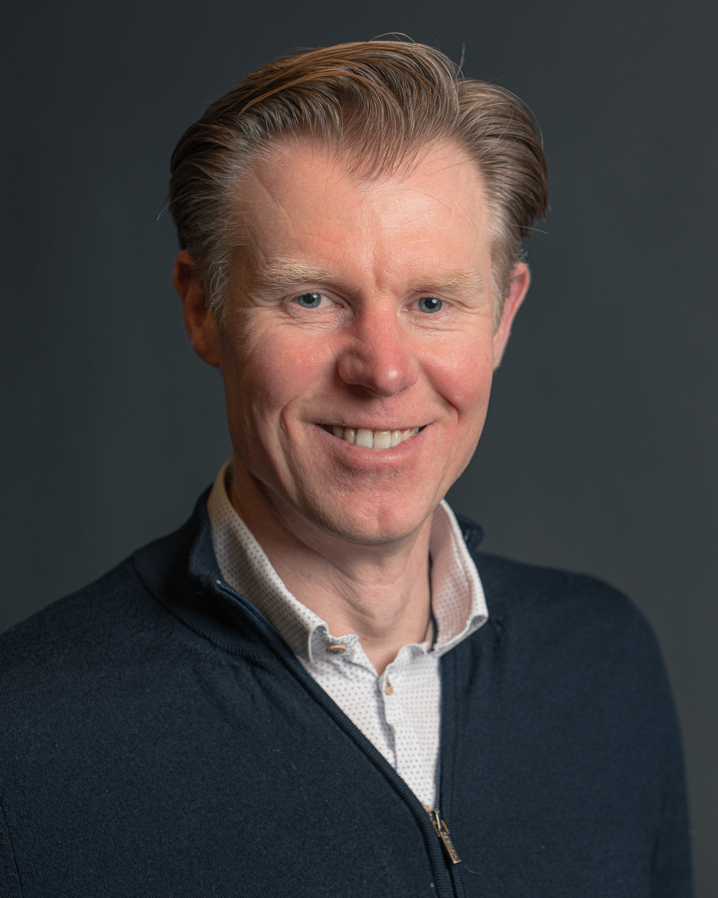

PERSOONLIJKE GEGEVENS
| Naam | Johannes Blok |
| Roepnaam | Hans |
| Woonplaats | Wijk bij Duurstede |
| Geboortedatum | 3 januari 1971 |
| Functie | IT-Architect |
| Beschikbaar per | 1 september 2026 |

KERNEXPERTISE
PERSOONLIJK
ACHTERGROND
| 1997 | PION — Siemens | Den Haag |
Opleiding tot Cobol programmeur op het mainframe. | ||
| 1989–1995 | WO Algemene Economie — Erasmus Universiteit | Rotterdam |
Afstudeerrichting: Algemene Economie. Tweede afstudeerrichting: Monetaire Economie en Bankwezen. | ||
| 1983–1989 | VWO — Willem de Zwijger | Schoonhoven |
Nederlands, Engels, Natuurkunde, Wiskunde A, Wiskunde B, Economie I, Geschiedenis. | ||
| 2025 | ArchiMate® 3 — The Open Group | |
| 2022 | SAFe® 5 Architect — Scaled Agile Inc | |
| 2019 | SOA Professional Gen 1 (mod 1,3, 8) (Honors) — Arcitura |
CURSUSSEN
| 2025 | Git Fundamentals, Vijfhart | |
| 2024 | ArchiMate® 3 training course – Foundation and Practitioner, Vijfhart, Service API Specialist Combined Certification Exam (Honors), Arcitura, Digital Transformation Specialist (Honors), Arcitura | |
| 2022 | Certificering SAFe® 5 Architect, Scaled Agile Inc | |
| 2021 | Beïnvloedingsvaardigheden, Schouten en Nelissen | |
| 2020 | Certificering SOA Design and Architecture Lab (Honors), Arcitura, Certificering SOA Gen 2, Service Technology Concepts, Arcitura, Cursus SOA Gen 2, upgrade microservices (mod 1, 3, 8), Arcitura | |
| 2019 | Cursus Zakelijk tekenen, Buro BRAND, Certificering SOA Professional Gen 1 (mod 1,3, 8) (Honors), Arcitura | |
| 2018 | Certificering Microservices Fundamentals, IBM Coursera, Certificering What is Data Science, IBM Coursera, Certificering Blockchain for Developers, IBM Coursera | |
| 2017 | Microservices and Event Driven Architecture, Xpirit, Technisch Leiderschap en vaardigheden, Cibit Academy | |
| 2014 | Agile Foundation, Xebia | |
| 2011 | IT-Architectuur in de praktijk, Cibit Academy | |
OVERIGE CURSUSSEN
Mastering the Requirements Process (Volere), Woningfinanciering I, Prince 2 Foundation, Dimensionaal Modelleren voor Datawarehouses, Business English, Methode en technieken voor informatieanalyse, Informatiesysteem-architectuur, Functioneel ontwerp van administratieve systemen, Testen in de praktijk, Certificering Oracle SQL, PL/SQL Opleiding tot Oracle Developer, Entity Relationship Modelling, Database ontwerp | ||
WERKERVARING
- Opstellen van Project Start Architecturen (PSA's) voor digitale voorzieningen, aansluitend op de Common Ground-principes.
- Afstemming met leveranciers over doorontwikkeling van applicaties en componenten conform Common Ground; beoordelen van roadmaps en architectuurkeuzes.
- Adviseren over de transitie van monolithische naar componentgerichte architectuur op basis van open standaarden en herbruikbare bouwstenen.
- Bijdragen aan gemeentebrede architectuurkaders en het vertalen van GEMMA-richtlijnen naar concrete oplossingen.
- Leveranciers constructief begeleid in het aligneren van hun productontwikkeling op Common Ground-principes en open standaarden.
- Bestaande Thema-architectuur vertaald naar Archimate views.
- Verbeteren overlegstructuren architecten.
Common Ground, GEMMA, PSA, Federatieve Service Connectiviteit (FSC), NL API Strategie, Zaakgericht werken, BiZZdesign, leveranciersmanagement, Digitalisering overheid
- Architectuurfunctie volwassen gemaakt: proces voor schrijven PSA verbeterd. Solution Architectuur onderdeel gemaakt van het wijzigingsproces (als onderdeel van een team).
- Referentie- en domeinarchitecturen opgesteld en; ArchiMate-modellen in BlueDolphin.
- Missie, visie en strategie voor Automatiseringsmanagement uitgewerkt (infra & technisch applicatiebeheer) en vertaald naar roadmaps en standaarden.
- Solution architectuur voor implementatie nieuwe portal voor inwoners.
- Verbeterde samenhang tussen infrastructuur, applicaties en dienstverlening; focus op betrouwbaarheid, beveiliging en beheersbaarheid.
- Architectuurdenken verankerd in de organisatie door een reeks minicursussen en praktische templates; teams betrekken nu vroegtijdig architectuur en besluiten worden vastgelegd met ADR’s.
GEMMA, Common Ground, BlueDolphin, Digitalisering overheid, Federatieve Service Connectiviteit (FSC), API-Gateway
- Medeverantwoordelijk voor het definiëren van standaarden, ondersteunen van drie agile-teams bij het realiseren van features en bewaken van de kaders.
- Samen met de software architecten definieer ik de visie op de technologie. Samen met lead architect en het MT zorg ik ervoor dat in de portfolio-laag ruimte komt om enablers te realiseren waarmee de visie wordt vormgegeven. Het traject bestaat uit een complexe migratie van een monoliet naar een gedistribueerd systeem. Daarnaast is een migratie uitgevoerd van een traditioneel hosting platform naar Red Hat OpenShift. In de rol was ik verantwoordelijk voor het definiëren van een architectuur waar foutafhandeling en monitoring (Grafana, Open Telemetry) is ingericht.
- Voorzitter van een stuurgroep met als verantwoordelijkheid om de transitie vorm te geven naar een werkwijze voor het maken van ontwerpproducten die past binnen het SAFe framework.
- Door agile-teams actief te ondersteunen en aandachtig te luisteren naar hun uitdagingen, heb ik bijgedragen aan een cultuur waarin externe ontwikkelaars zich verbonden voelen met de doelstellingen van de Belastingdienst. Dit stimuleert hen om met betrokkenheid en toewijding te werken aan deze doelen en versterkt de innovatiekracht binnen de organisatie, waardoor het ontwikkelen van software steeds aantrekkelijker wordt.
Service Oriented Architecture, SAFE, migratie monolithisch systeem naar microservices, micro frontend, IAM
- Werkzaam als Lead architect in een programma met als doel de implementatie van Europese wetgeving in het te moderniseren IT-landschap in het domein van de Omzetbelasting. In die rol heb ik een belangrijke bijdrage kunnen leveren in de herijking van de domeinarchitectuur op het gebied van technologie.
- In de rol van architect heb ik de programma Solution Architectuur afgerond en afgestemd met de stakeholders waaronder Directie Belastingdienst en de Directeur-Generaal. Verantwoordelijk voor het definiëren van architectuur enablers in een SAFE-omgeving en het voorbereiden van de PI-events samen met de product manager.
- Aanspreekpunt van de Agile-teams voor het realiseren van de story’s. In de rol als programma architect heb ik verschillende presentaties gegeven, een film gemaakt en een workshop georganiseerd.
Herziening van de technologiekeuzes waarbij de doeltechnologie is herzien. Daarnaast heb ik de keuzes op het gebied van orkestratie en asynchrone verwerkingen en communicatiepatronen vastgelegd en uitgedragen aan de teams.
Service Oriented Architecture, SAFE, migratie monolithisch systeem naar microservices, micro frontend, IAM
In het hoofdontwerpteam Inkomensheffing was ik medeverantwoordelijk voor het beschrijven van de solution op basis van de domeinarchitectuur; ik heb het team versterkt door een SOA-certificeringstraject te initiëren en de principes direct in de praktijk te brengen. Als projectarchitect voor Inkomensheffing was ik aanspreekpunt voor regelanalyse vraagstukken. Mijn kerntaken bestonden uit het opstellen van impactanalyses en het vastleggen van een referentiearchitectuur voor het realiseren van een servicegeoriënteerd landschap.
Architecten van het IH-domein gemotiveerd en geactiveerd om een servicegeoriënteerde aanpak te adopteren, waarmee de basis is gelegd voor een toekomstvaste architectuur.
Service Oriented Architecture, Regelanalyse, impactanalyse
Sinds 2011 heb ik bij Stater de IT-architectuurfunctie opgezet en geborgd (DYA ingevoerd, PSA-template/proces ingericht, en tussen 2013–2017 de governance geleid als secretaris van de Architectuur Board, domeinarchitecten aangestuurd en ~80 collega’s getraind in PSA-schrijven (samen met business-architecten volgens TOGAF).
Als programma-/projectarchitect (o.a. ABN AMRO Hypotheken) definieerde en implementeerde ik de integratie-architectuur voor de digitalisering van het hypotheekproces (portal & mobile) en borgde ik GDPR-richtlijnen, 24/7-architectuur en DAMA-datavolwassenheid.
In 2017 heb ik met een kernteam de referentiearchitectuur voor digitale transformatie opgesteld (Iconic Customer Journey, STP/papierloos) en de organisatie begeleid van twee monolieten naar microservices, terwijl ik met R&D en klanten blockchain-toepassingen onderzocht en via events een coalitie rondom deze innovaties bouwde.
In 2010 ben ik gevraagd om IT-architectuur in te richten bij een kleine IT organisatie. In 2018 zijn er zes IT-architecten in functie bij Stater, ligt er een door Gartner als kwalitatief zeer goed beoordeelde referentiearchitectuur voor digitale transformatie en is IT-architectuur vanzelfsprekend in de inmiddels middelgrote IT-organisatie.
DYA, PSA, Digitalisering, migratie van monoliet naar microservices
- Informatieanalyse en functioneel ontwerp voor het in converteren van de hypotheekportefeuille van ABN Amro Bank in de omgeving van Stater.
- Informatieanalyse in een project met als doel het inrichten van een nieuwe Data Warehouse-omgeving.
Zelfstandig analyse en regie uitgevoerd over complexe conversie-issues in onbekend domein. Succesvolle, grote conversie van hypotheekportefeuille.
Succesvol en zelfstandig regie gevoerd over complexe conversie-issues in een onbekend domein, wat heeft geleid tot een foutloze migratie van een grote hypotheekportefeuille.
Hypotheken, migratie hypotheekportefeuille, Data-warehouse
Vanaf 2005 was ik verantwoordelijk voor informatieanalyse, onderhoud van het logisch datamodel, functioneel ontwerp en test in een omgeving waarbij de ontwikkeling in India plaatsvond.
Regiefunctie bij de succesvolle conversie van de splitsing van de energiemarkt in Nederland.
Outsourcing India, splitsing energiemarkt, conversie
Sinds 1997 werkte ik als COBOL-programmeur (Rabobank Effectendiensten). In 1999 ben ik omgeschoold tot Oracle-developer. Ik ben gestart met een opdracht met end-to-end verantwoordelijkheid voor applicatie-onderhoud bij de Rijksarchiefdiensten (ontwerp, realisatie, test, releases, DBA, implementaties in NL/BE).
Vanaf 2001 was ik ontwikkelaar in het onderhoudsteam van een energieleverancier en initieerde ik continue verbetering, waaronder het automatiseren van OTAP-releases voor de billing-applicatie.
Continu verbeterproces vormgegeven voor het uitvoeren van applicatieonderhoud (ITIL). Als jong talent ook ingezet bij Atos Origin om landelijk verbeteringen door te voeren.
Oracle, ITIL, billing-applicatie, bankwezen, energiesector